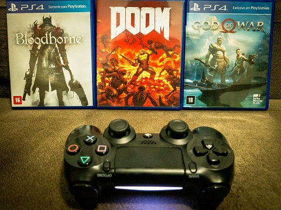

Curso Sistemas para Internet na Universidade Tecnológica Federal do Paraná (UTFPR). Almejo me formar e iniciar uma carreira profissional nesta área.
Atualmente, trabalho como auxiliar de secretário no setor de faturamento de uma pequena empresa de distribuição de alimentos.
Em 2017, desenvolvi interesse em fotografia após fazer testes com a câmera do meu smartphone, mas logo pretendo adquirir minha primeira câmera profissional e iniciar um curso de fotografia:
Meus tipos de literatura preferidos são os de mistério e de horror cósmico:
Desde 2011, meu repertório musical consiste basicamente de Heavy Metal e seus vários subgêneros, como Death Metal e Metal Melódico:
Nas horas vagas, jogo títulos de First Person Shooter e Hack N' Slash, e os meus favoritos são: Bloodborne, DooM e God of War:

Assisto desde filmes trash de terror dos anos 80 a séries dramáticas contemporâneas. Aprecio tanto a capacidade desta mídia de entreter quanto a de emocionar e de fazer pensar: